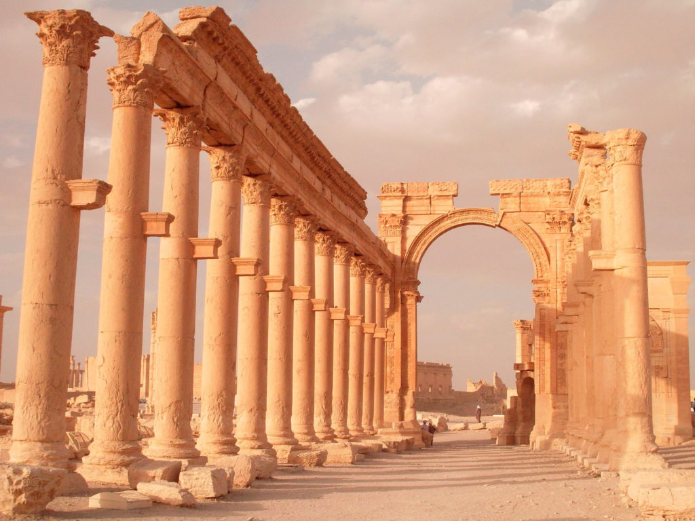

×

Syria
Происхождение названия
Название «Сирия» происходит от древнегреческого названия колоний Ассирии, образованных от семитского слова «Сирион». Местность на восточном побережье Средиземного моря южнее Киликии, между Египтом и Месопотамией, включающую армянские области Коммагену, Софену и ассирийскую область Адиабену, Плиний Старший описывает как «бывшую Ассирию». К тому времени, как Плиний закончил свой главный труд — «Естественную историю», этот регион был разделён Римской империей на несколько провинций: Иудея (позже — Палестина, современный Израиль, ПНА и часть Иордании), Финикия (современный Ливан), Месопотамия и Келесирия (то есть «Полая Сирия»).
История
История сирийской цивилизации восходит, как минимум, к IV тысячелетию до н. э.
Ислам закрепился в Сирии в 661 году, когда Дамаск стал столицей Арабского халифата при Омейядах.
Вскоре после поражения в Первой мировой войне Османская империя распалась, а многие её территории оказались оккупированными.
Президентом независимой Сирии стал Шукри аль-Куатли, боровшийся за независимость страны ещё при Османской империи.
Одно из наиболее светских государств арабского востока, в частности церковь отделена от государства, бюджет отделён от расходов правящей группы, проводятся выборы.
Революции, происходящие на Ближнем Востоке, перекинулись и на Сирию.
Правительство и политика
На данный момент действующий президент страны — Асад, Башар (с 17 июля 2000).
Данные: Дата рождения 11 сентября 1965. Место рождения Дамаск, Сирия. Супруга Асма аль-Асад. Дети сыновья: Хафез и Карим
дочь: Зейн.
На данный момент действующий вице-президент страны - Шараа, Фарук (с 21 февраля 2006).
Данные: Дата рождения 10 декабря 1938. Место рождения Дамаск, Сирия.
Праздники
| Дата | Праздник | Примечание |
|---|
| 1 января | Новый год | Начало календарного года |
| 8 марта | День революции 8 марта | День революции 8 марта |
| 21 марта | День матери | День матери |
| 1 мая | День рабочего | В честь всех рабочих |
| 6 мая | День мучеников | День мучеников |
| 6 октября | День Октябрьской войны | День Октябрьской войны |
| 25 декабря | Рождество | Празднование Рождества |
____